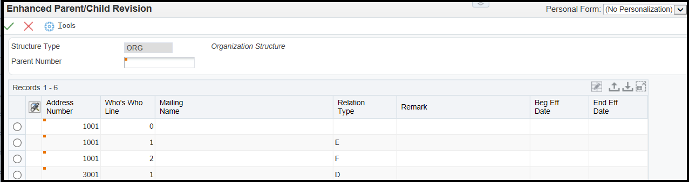

Overview of Address Book Parent/Child Relationships (P0150)
Parent/child relationships in the address book records of your suppliers, customers, and prospects are like family relationships. One address book record is the parent and one or more address book records are the children of that parent. Creating parent/child relationships can make your business more efficient. For example, you can send billing for field offices or subsidiary companies (children) to the corporate headquarters (parent) if you set up parent/child relationships.
After you enter address book records in the Address Book system, you can create parent/child relationships among them. You can create these relationships for these structures:
Accounts receivable structures.
Accounts payable structures.
Reporting structures within your organization.
Two main forms are used for parent/child relationships:
Address Parent/Child Revisions (p0150) - used to create parent/child relationships among address book records for suppliers, customers, and so on.
Work With Distribution Lists (P02150) - used to review the parents of a child or all child relationships.
It is also possible to set up enhanced parent/child relationships to create organizational structures between an address book number and one or more who’s who entries.
Scope
This document is intended for users setting up and using parent/child relationships in address book.
Details
Setting Processing Options for Structure Revisions (P0150)
Processing options enable you to specify the default processing for programs and reports.
Process Tab
Workflow Information - Specify whether to display workflow processing information. Values are:
Blank: Do not display workflow information
1: Display workflow information
Tier Descriptions - Specify whether to allow a tier structure to be defined based on effective dates for a root parent address. The root parent in a structure is the highest level of a parent/child structure, and can have no parent. Values are:
Blank: Do not allow a tier structure to be defined.
1: Allow a tier structure to be defined.
Defaults Tab
Date Defaults - Specify whether the system supplies default dates on the P0150 parent/child revisions form when the beginning and ending effective dates are omitted. Values are:
Blank: The system does not supply default dates.
1: The system supplies default dates.
Default Organization Structure Type - Specify the value that the system enters in the Organizational Structure field when the A/B Org Structure Browse program (P0150) is first run. If you leave this processing option blank, the system does not provide a default value for the organization structure type.
Setting Processing Options for Structure Inquiry (P02150)
Defaults Tab
Enter the default Structure Type - Specify a valid structure type from user-defined code (UDC) table (01/TS). A structure type identifies a type of organizational structure that has its own hierarchy in the JD Edwards Address Book system (for example, E-mail). When you create a parent/child relationship for the JD Edwards Accounts Receivable system, the structure type must be omitted.
Enter the version of Organizational Structure Revisions (P0150) to be called. If left blank, version ZJDE0001 will be used. The version indicates a specific set of data selection and sequencing settings for the application. Versions may be named using any combination of alphabetic and numeric characters.
Creating Parent/Child Relationships
Access the Address Parent/Child Revisions form (P0150) and click 'Add'.
Enter the following field information as required:
Parent Number - Enter the address book number of the parent entity (for example, parent company). The system uses this number to associate a particular address with a parent entity or location. Any value that you enter in this field updates the Address Organizational Structure Master table (F0150) for the specified structure type. This address number must exist in the Address Book Master table (F0101). Examples of address book records that would have a parent number include: Subsidiaries with parent companies, branches with a home office, job sites with a general contractor. On the Address Parent/Child form, enter the Address Book number of the primary level in a hierarchy, or reporting relationship. A parent in one hierarchy can be a child in another hierarchy. A hierarchy can be organized by business unit, employee, or position. For example, you can create a hierarchy that displays the reporting relationships between employees and supervisors.
Structure Type - Enter a user-defined code (UDC) from table 01/TS to identify a type of organizational structure that has its own hierarchy in the Address Book system (for example, email). When you create a parent/child relationship for the Accounts Receivable system, the structure type must be blank. This field identifies the type of distribution list, such as WFS for workflow, ORG for group, and EML for email.
Address Number - Enter a valid address book number. This number identifies an entry in the Address Book system, such as employee, applicant, participant, customer, supplier, tenant, or location.
Group - Enter a number for the group. This number reorders a group of records on the form.
Begin Eff Date (beginning effective date) - Enter a valid date. This is the date on which the address number appears in the structure. The Beginning Effective Date field prevents the address number from occurring in the structure until the beginning effective date is the same as the current date. If you select the processing option for tier descriptions in the Structure revisions program (P0150), you must complete this field. If left blank, the address number always occurs in a structure unless there is an ending effective date.
End Eff Date (ending effective date) - Enter the date on which the address book record will cease to exist in the structure.
Note. The Escalation Hours and Escalation Minutes fields are not used by the JD Edwards Address Book system.
Reviewing Parent/Child Relationships
Access the Work With Distribution Lists form (P02150):
To review parent/child relationships:
Change the value in the Structure Type field, if necessary. The default organization structure type is specified in a processing option.
To review all child relationships, click the folders that have + to the left of the names in the detail area.
To review the parents of a child, complete the remaining steps.
Select the Parents option.
Enter a child address book number in the Parent Number field and click 'Find'.
Enhanced Parent/Child Relationships (P01501)
You use the Enhanced Parent/Child Relationships program (P01501) to create organizational structures between an address book number and one or more who's who entries. These organizational structures identify an address book number as a parent and one or more address book numbers that are attached to who's who entries as children. For example, you can create an enhanced parent/child organizational structure to set up a project. You identify an address book number as the parent and then identify individuals (who's who entries) as members of the project. The who's who entries can be attached to the parent address book number as well as other address book numbers. Enhanced parent/child relationships are stored in the Enhanced Parent Child table (F01501). In order to use Enhanced Parent/Child, set up codes for enhanced parent/child structure types in UDC table 01/TS.
To create enhanced parent/child relationships
Access the Enhanced Parent/Child Revisions form (P01501) and click 'Add'.

Enter the following field information as required:
Parent Number - Enter the address book number of the parent company to create an enhanced parent/child organizational structure.
Address Number - Enter the Address Book number. This number that identifies an entry in the Address Book system, such as employee, applicant, participant, customer, supplier, tenant, or location.
Who's Who Line - Enter the line number. This field is used to identify the line ID number for a Who's Who record.
Relation Type - Specify the type of relationship created between the two entities. Roles must be defined in UDC 01/RT. Example values include